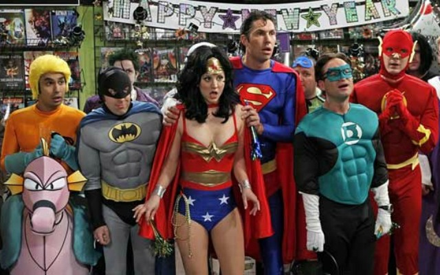

Ti trovi in: Home Home
Pasadena.Leonard, Sheldon, HowardeRajsono quattro brillanti giovani i quali lavorano insieme alCalifornia Institute of Technology. La grande intelligenza ne fa tra le menti più valide del Paese, ma di contro li rende socialmente degli inetti: il loro legame d'amicizia è infatti cementato dalla rispettiva condizione dinerdegeek. Fuori dal lavoro il tempo libero dei quattro trascorre principalmente tra la lettura di fumetti, partite avideogamee giochi di ruolo, e la visione di film e serie TV a tema fantascienza e supereroi; l'assenza di ragazze è sempre stata una costante nelle loro vite.

Questa scialba routine cambia radicalmente quandoPenny, una ragazza di provincia giunta inCaliforniaper coltivare il sogno di diventare attrice, diventa la nuova vicina di pianerottolo diSheldoneLeonard. La ragazza, bella ed esuberante, e della qualeLeonardsi innamora a prima vista, è l'esatto opposto dei quattro amici; lo strano e complicato mondo dei ragazzi finisce ben presto per scontrarsi con quello semplice e superficiale diPenny, e le loro tranquille esistenze ne risultano inevitabilmente stravolte.
Con il passare degli anni il gruppo si allarga a quelle che diventeranno le migliori amiche diPenny, BernadetteeAmy, valide scienziate nonché destinate a diventare l'interesse amoroso, rispettivamente, diHowardeSheldon, oltre aStuart, titolare della fumetteria frequentata dai quattro amici.